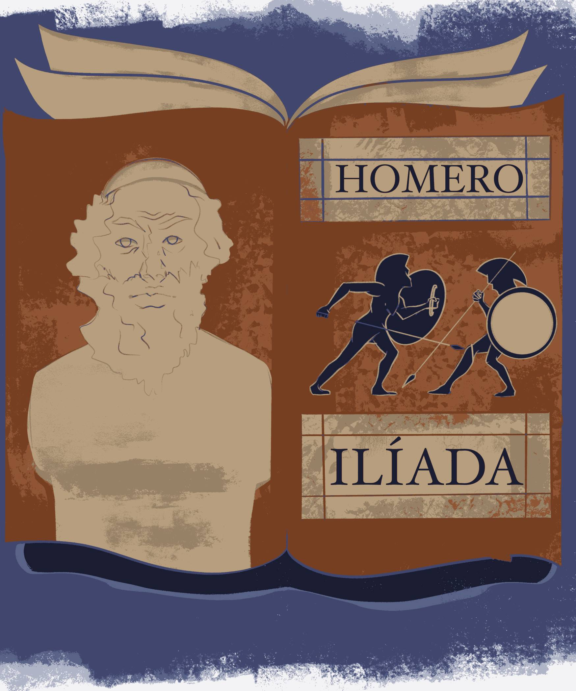

Durante el periodo del neoclasicismo se comenzaron a intercalar influencias
europeas distintas al clásico Español e incluso italianas, incorporando ahora
influencias y sugerencias francesas, norteamericanas e inglesas. Gracias a que
durante este periodo despierta el interés por las matemáticas, ciencias, filosofía
y lingüística, la literatura vista a lo largo de este periodo es más estructurada
y organizada. Por este mismo motivo, la falta de dramatización, ornamentación, y
general interés por la forma causa que la expresión de sentimientos humanos a través
de poesía no sea tan común; mismo motivo por el que la prosa se desarrolló mucho más
que el verso durante este periodo, siendo más variada y rica. Existieron poetas
notorios dentro del periodo Neoclásico, tales como Juan José de Arriola (México, 1698-1768)
que escribió Décimas de Santa Rosalía (1766) y Canción a un desengaño (1755); sin embargo
para la época fue de mayor importancia la traducción de épicos griegos y latinos, tal como
La Ilíada de Homero, traducida por Francismo Javier Alegre (México, 1729-1788).